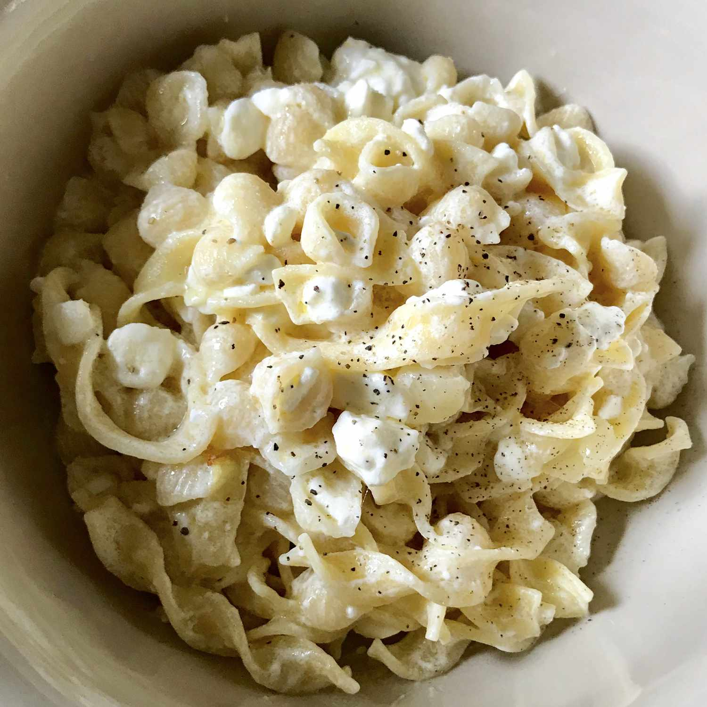

Polish Noodles

Description
Assorted vegetables with a ground beef stuffing that will melt in your mouth! My all-time favorite food to eat. My dad was born and raised in Iran and this is a recipe passed down for generations. I wanted to share this with others because all my friends bug me or my dad to make dolma. It's a big hit! You can stuff all kinds of vegetables, like tomatoes, or different kinds of squash, or use grape leaves as well, so feel free to experiment. I hope everyone enjoys the dolma as much as me and my family have for years.
Description
- Butter
- Onions
- Noodles
- Cheese
- Sour Cream
Steps
- Melt butter in a saucepan over medium heat. Cook and stir onion in melted butter until softened, 7 to 10 minutes.
- Meanwhile, bring a large pot of lightly salted water to a boil. Add egg noodles and cook, stirring occasionally, until partially cooked, about 5 minutes. Drain and return to the pot.
- Pour onion mixture over noodles, then stir in cottage cheese, sour cream, salt, and pepper. Cook over medium heat, stirring occasionally, until sauce is heated through and noodles are tender, yet firm to the bite, 5 to 8 minutes.